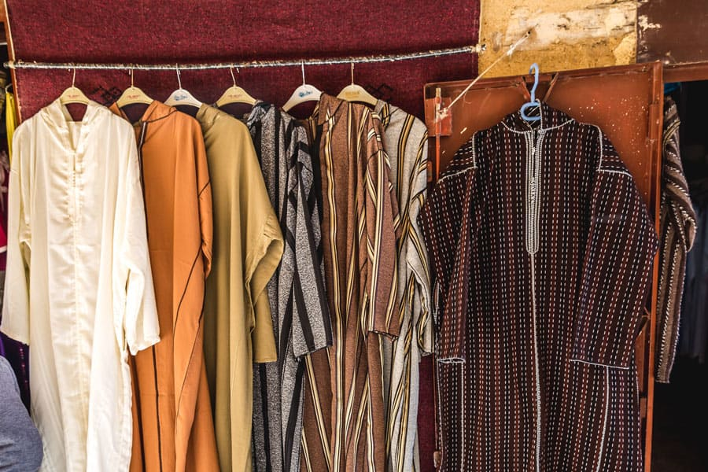
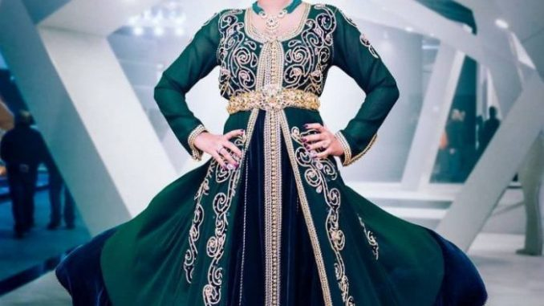
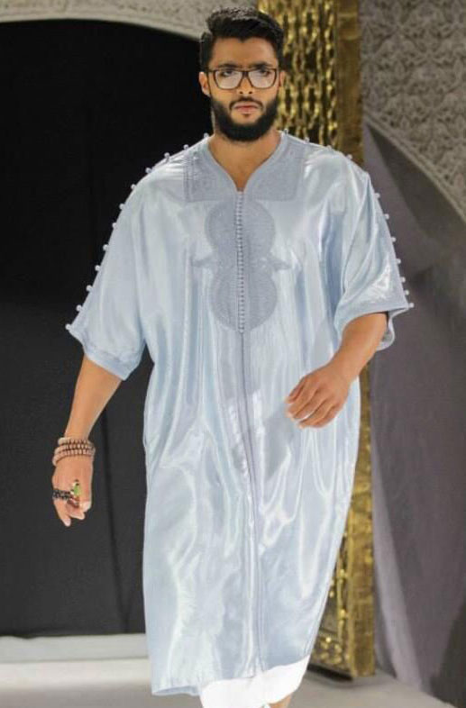

Bien que le port de la djellaba se soit vulgarisée, au départ, elle était bien le vêtement des dignitaires. Classe, élégance, prestance, elle habillait subtilement les personnes les plus haut placées. Au Maroc, la djellaba de Bzou est très prisée par les hauts dignitaires. La complexité de sa fabrication, le tissage à la main, les finitions, sont tous autant de facteurs influençant le prix de la djellaba. D'ailleurs beaucoup se l'arrachent. Mais la djellaba "bzouia" n'est pas à la portée de tous.
Le caftan marocain est une tenue traditionnelle marocaine. Sous la forme d'une tunique longue, et en général à manche longue, portée avec une ceinture (mdama) qui se déploie sous énormément de styles et de couleurs. Le caftan marocain résulte des savoirs-faire des artisans et couturiers (maalem) du pays sous l'influence des cultures arabe, berbère, andalouse et juive. C'est la tenue d’apparat par excellence des femmes marocaines lors des cérémonies (mariages, baptêmes, fêtes religieuses). Les stylistes ont démocratisé le caftan traditionnel en l’adaptant aux particularités de notre civilisation du xxie siècle. Le caftan marocain a gagné en popularité après avoir été introduit par de grandes lignes de vêtements, et stylistes, à travers des défilés de mode prestigieux tel que l'Oriental Fashion Show1 durant les Fashions week partout dans le monde. Ainsi que le travail de promotion de magazines marocains comme Femmes du Maroc.
La gandoura et le sarouel sont l'accoutrement coutumier de ces derniers. Ils les portent en dessous de leur fameuse djellaba. La gandoura est une tunique, généralement à manches courtes, allant jusqu'aux chevilles et habillant les épaules, que les marocainsportent chez eux pour être à l'aise, mais également à l'extérieur. En été, elle se portera seule, sans djellaba. Le sarouel comme son nom l'indique est un pantalon, le plus souvent large, agrémenté d'une entrejambe ou pas. La gandoura tout comme le sarouel sont de coton ou de lin, unis, bicolores ou aux palettes aussi diverses que variées. Pourvu qu'ils plaisent et qu'ils reflètent l'art du Royaume Chérifien.
